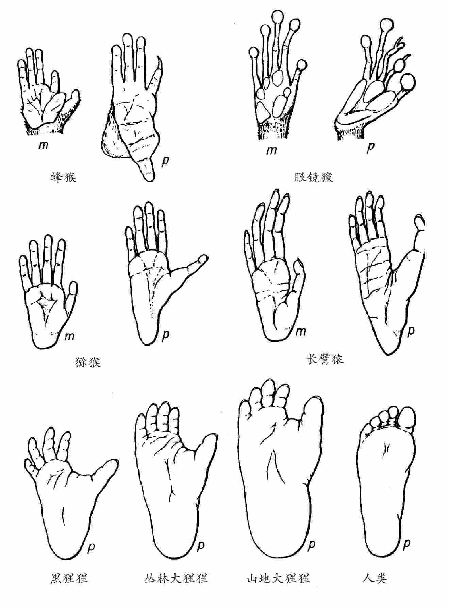
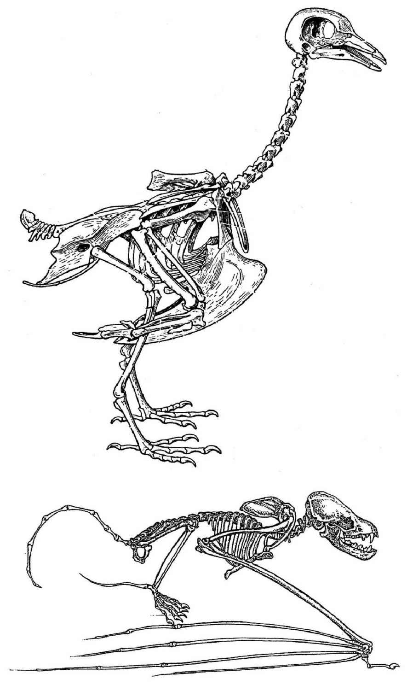
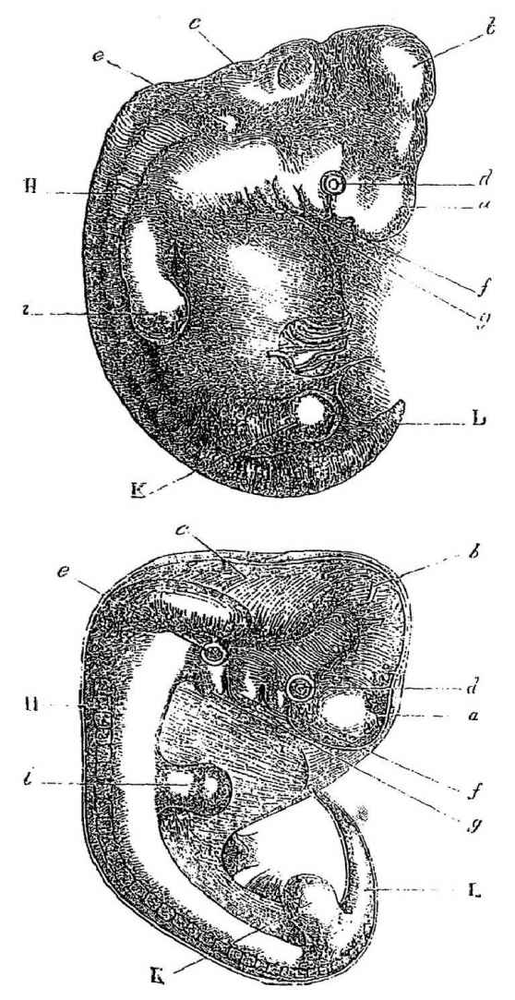
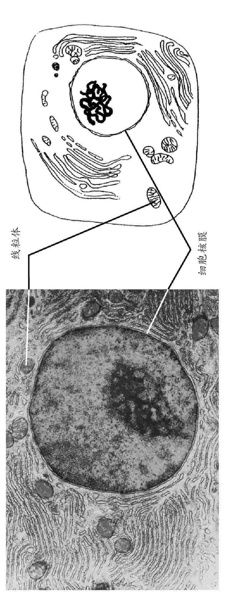
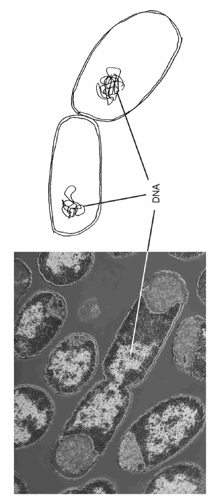
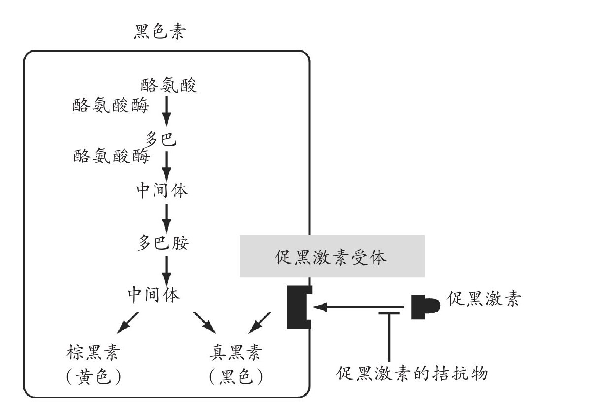
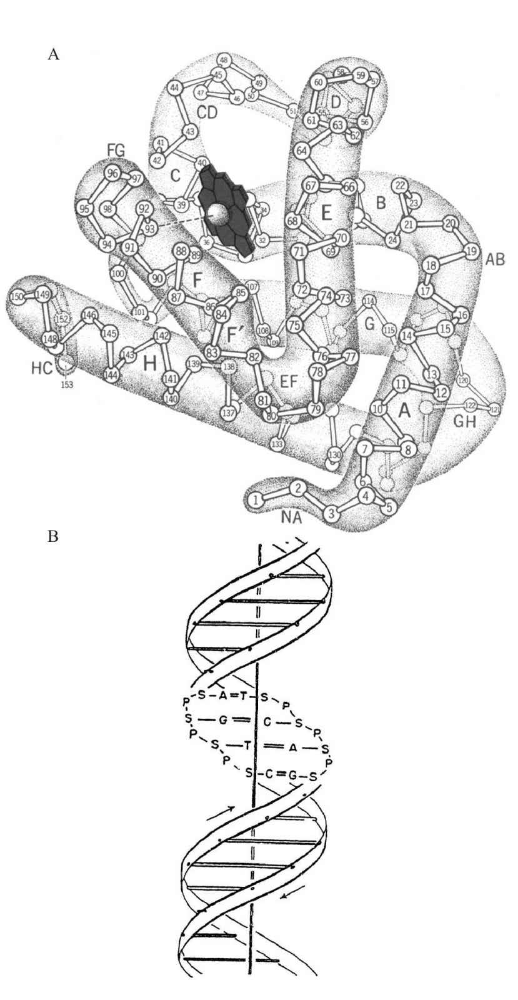
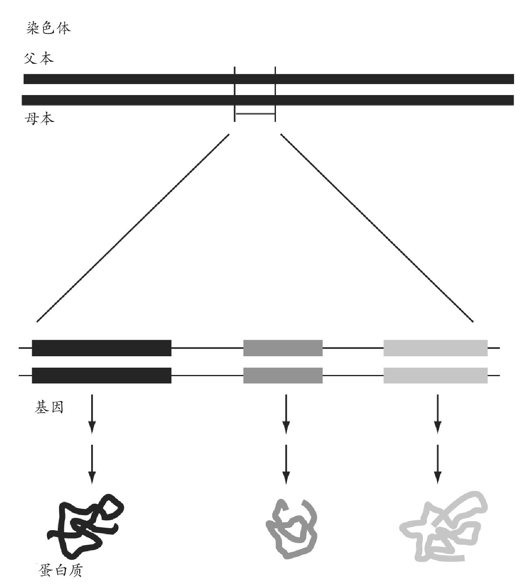
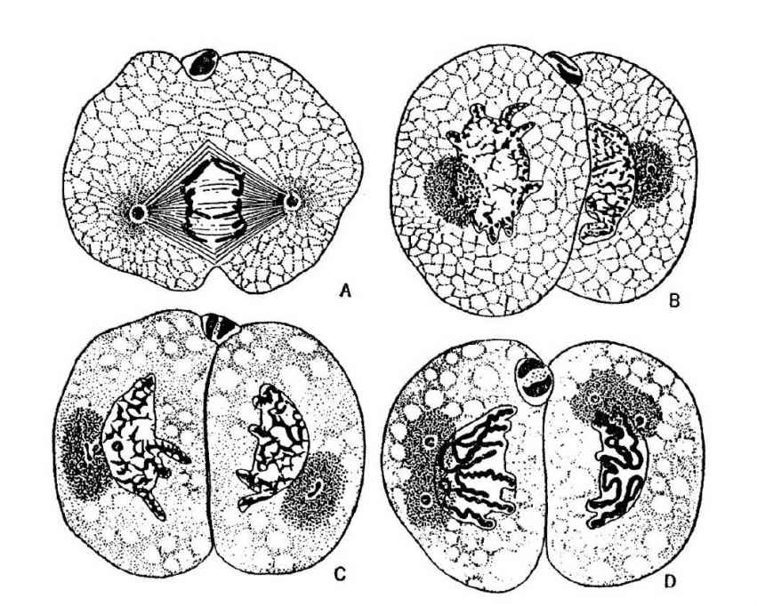
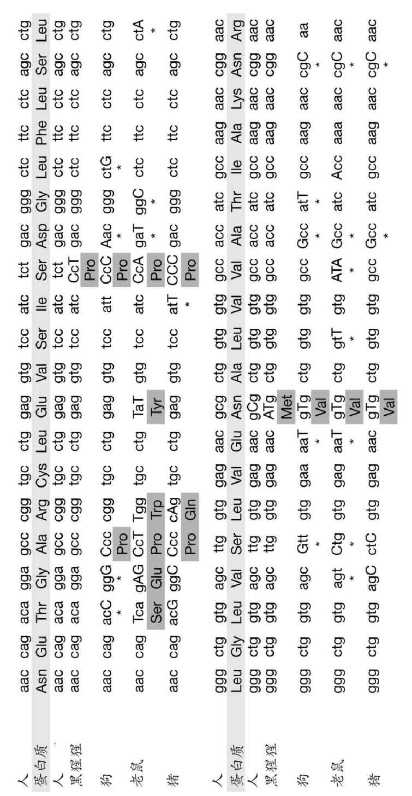

进化论对生命的多样性做出了解释，其中包括动物、植物、微生物的不同物种间众所周知的差异；同时也解释了它们最基础的相似性。这些相似性通常在外部可见的特征这一表面层级上较为明显，同时也延伸至显微结构与生化功能中最精密的细部。我们将在本书的后文（第六章）中对生物的多样性进行讨论，同时阐述进化论如何解释“青出于蓝而胜于蓝”这一现象。但是，本章我们将着眼于生物的整体。此外，我们将介绍许多基本的生物学常识，后文的几章内容，正是建立在这些基本常识之上。
不同物种类别间的相似性
生物——即使是截然不同的生物——之间，在各种层面上都存在相似性。从我们熟悉的、外形上可见的相似，到更为深远的生命周期的相似，以及遗传物质结构的相似。即使在两种有着天壤之别的物种，如我们人类与细菌间，这些相似性都可以被清晰地探测到。基于以下理论，即生物都源自一个共同的祖先，它们在进化的过程中彼此产生联系，我们可以对这些相似性进行简明而自然的解释。人类本身与猩猩有着显而易见的相似性，如图1A所示，包括内部特征，例如我们的大脑结构与组成的相似性。我们与猴子之间存在较小一些的相似性，甚至与其他哺乳动物间，尽管我们之间有那么多不同，也存在更小、不过依然十分明确的相似性。哺乳动物与其他脊椎动物相比，也存在许多相似之处，包括它们骨骼的基本特征，以及它们的消化、循环和神经系统。更让人惊奇的是我们与一些生物，例如昆虫之间存在的相似性（比如昆虫分节的躯干、它们对于睡眠的需求、它们睡眠与苏醒的日常节律的控制），以及不同物种间神经系统作用的根本相似性。

图1 A.一些灵长类动物的手（m）与脚（p），展示了不同物种间的相似性，以及与动物生活方式相关的差异，例如树栖的物种有着与其他趾相对的趾（蜂猴和眼镜猴是原始树栖类灵长动物）。

图1 B.鸟类与蝙蝠的骨骼，图中展示了它们之间的相似与差异。
生物分类系统长久以来都基于易于观察的结构特点。例如，早在生物科学研究开始之前，昆虫就被认为是一类相似的生物；它们拥有分节的躯干、六对多节的足、坚固的外在保护壳等，这些使得它们与其他种类的无脊椎动物（例如软体动物）有着显著的区别。这其中的许多特征也存在于其他种类的动物身上，例如螃蟹和蜘蛛，只不过它们拥有不同数量的足（对于蜘蛛而言，这个数量是八条）。这些不同的物种都被归入同一个更大的分类之中，即节肢动物。昆虫是节肢动物的一类，而在昆虫之中，蝇类又组成了一小类，特征就是它们都只有一对翅，同时还有其他共有的特征。蝴蝶与蛾子形成了另外一个昆虫类别，这一类中的成员们两对翅上都有着精细的结构。在蝇类之中，我们依据共有的特征，将家蝇及它们的近亲与其他成员区分开来；在它们之中，我们又命名单个物种 ，例如最常见的家蝇。物种究其本质而言，即一群相似的能够彼此杂交繁殖的个体的集合。相似的种被划归进同一个属 ，同样地，同一个属中的生物都拥有一系列其他属所不具有的特性。生物学家通过两个名字确定每一个可鉴别的物种——属名，然后是该物种本身的种名，例如智人（Homo sapiens ）；这些名字依据惯例采用斜体书写。
生物可以被逐级归入不同类别，随着归类的细化它们之间所共有的且其他类别的生物不具有的特征也越来越多——这一发现是生物学上的一个重大的进步。不同生物物种的划分，以及物种的命名体系，在达尔文之前很久就出现了。在生物学家开始思考物种的进化问题之前，对物种有一个清晰而具象的概念显然是非常重要的。对于生物这种分层次的相似性最简单也最自然的解释即，生物随着时间推移不断进化，自原始祖先开始不断多样化，形成了今天现存的生物类群，以及数不胜数的已灭绝生物（见第四章）。如我们将在第六章讨论的，如今可以通过直接研究它们遗传物质中的信息，对生物类群间这种推测的谱系关系进行判断。
另外一系列能够强有力地支持进化论的事实是：在不同物种中，存在同一结构的不同特化（modification）。例如，蝙蝠与鸟类翅膀的骨骼清晰地说明它们都属于特化的前肢，尽管它们与其他脊椎动物的前肢看起来截然不同（图1B）。类似地，尽管鲸的上肢看起来非常像鱼类的鳍，同时也显然非常适合游泳，它们的内在结构却与其他哺乳动物的足相似，除了趾的数目多了一些。结合其他证明鲸是哺乳动物的证据（例如它们用肺呼吸、给幼崽哺乳），这一事实也就合情合理。化石证据证明，陆生脊椎动物的前肢与后肢源自肉鳍鱼类的两对鳍（肉鳍鱼类中最著名的现存生物代表是腔棘鱼，见第四章）。而最早的陆生脊椎动物化石，也确实有多于五个的趾，就像鱼类与鲸。另一个例子是哺乳动物耳朵中的三块听小骨，它们负责把外界的声音传输给将声音转换为神经信号的器官。这三块微型的骨头最初发育自胚胎时期的下颌与颅骨，在爬行动物中它们随着发育逐渐扩大，最终形成头部与下颌骨骼的一部分。连接爬行动物与哺乳动物的化石纽带展示了这三块骨头在成年个体中连续的进化与变形，最终进化成为听小骨。在不同功能需求的作用下，相同的基本结构在进化过程中发生了显著的变化——类似的例子比比皆是，以上例子只是众多已知事例中的一小部分。
胚胎发育与痕迹器官
胚胎发育也为不同生物间的相似性提供了许多醒目的证据，清晰地显示了来自共同祖先的传承。不同物种的胚胎形成通常呈现惊人的相似，尽管它们的成熟个体千差万别。例如，在哺乳动物发育的某一阶段，会出现类似鱼类胚胎的鳃裂（图2）。如果我们是源自类似鱼类的祖先，那么这一切都有了很好的解释，否则这一现象将十分令人费解。正是由于成熟个体的结构需要使生物个体适应其所生存的环境，它们极有可能被自然选择所改造。可能发育中的血管需要鳃裂的存在，以引导它们在正确的部位形成，因此这些结构依然保留着，甚至在那些从不需要鳃功能的动物身上。然而，发育是能够进化的。在其他很多细节上，哺乳动物的发育与鱼类有着显著区别，因此其他在发育过程中影响不那么深远的胚胎结构，逐渐地消失了，取而代之的是新的结构。
相似性并不仅仅局限在胚胎阶段。痕迹器官 长久以来也被认为是现代生物的远古祖先功能器官的残余结构。它们的进化非常有趣，因为这些实例告诉我们进化并不总是创造、改进结构，它们有时也会削减结构。人类的阑尾是一个典型的例子。作为消化道的一部分，阑尾在人体之中已经被大大缩减，而在猩猩身上，这部分依然巨大。在无腿动物身上出现退化的肢，这一例子也为人们所熟知。在发现的原始蛇化石之中，它们具有几乎完整的后肢，说明蛇是由有腿的、类似蜥蜴的祖先进化而来的。现代蛇的身体由一个瘦长的胸廓（胸部）以及众多脊椎骨（蟒蛇的脊椎骨超过300块）组成。对于蟒蛇而言，不带肋骨的脊椎骨标志着躯干与尾部的分界，也正是在这个部位发现了退化的后肢。在这个后肢中，有骨盆带与一对缩短了的股骨，它们的发育过程遵循了其他脊椎动物的正常轨迹，表达着通常控制四肢发育的相同基因。移植蟒蛇的后肢组织甚至能够促使鸡的翅膀形成额外的指，说明这部分后肢的发育系统依然存在于蟒蛇体内。然而，其他进化更加完全的种类的蛇，则彻底无肢。

上图为人类胚胎（来自Ecker）；下图为狗的胚胎（来自Bischoff）。
a.前脑、大脑半球等 g.第二腮弓 b.中脑、四叠体 h.发育中的脊椎和肌肉 c.后脑、小脑、延骨髓 i.前肢 d.眼 k.后肢 e.耳 l.尾或尾骨 f.第一腮弓
图2人类与狗的胚胎，展现了它们在这一发育阶段最重要的相似性。在图中可以清楚看到鳃裂（标出了鳃弓f与g）。来自达尔文的《人类起源与性选择》（1871）。
细胞与细胞功能的相似性
不同生物间的相似性并不局限在可见的特征中。它们根深蒂固，深入到最细小的微观层面以及生命最基础的层面。一切动物、植物及真菌都具有一个基本特点，即它们的组织是由本质上相似的基本单元——细胞 所组成的。细胞是所有生物体（病毒除外）的基础，从单细胞的细菌与酵母，到拥有高度分化组织的多细胞个体如哺乳动物。真核生物 （所有非细菌的细胞生命）的细胞由细胞质 与细胞核 组成，在细胞核中包含了遗传物质（图3）。细胞质并不只是包裹在细胞膜内的供细胞核漂浮其中的简单液体，它含有一系列复杂的微小结构，其中包括许多亚细胞结构。其中两种最重要的细胞器 是产生细胞能量的线粒体，以及绿色植物细胞中进行光合作用的叶绿体。现在，人们已经了解到，这两种细胞器都来源于侵入细胞并与细胞融合、成为其重要组成部分的细菌。细菌也是细胞（图3），但是相较而言，细菌细胞更简单，没有细胞核与细胞器。它们与和它们类似的生物被统称为原核生物。作为唯一一种非细胞形态的生物，病毒寄生于其他生物的细胞中进行繁殖。病毒仅由一个蛋白质衣壳及它所包裹的遗传物质组成。

图3 真核生物与原核生物细胞。A.哺乳动物胰腺细胞电子显微镜照片与示意图，展示了核膜内包裹着染色体的细胞核，细胞核外的区域含有许多线粒体（这些细胞器也有包住它们的膜）；以及膜状的结构，它们参与蛋白质合成与输出，并将化学物质运入细胞。线粒体的体积略小于细菌细胞。

B.细菌细胞的电镜照片及示意图，展现了它简单的结构：一层细胞壁与未包裹于细胞核中的DNA（脱氧核糖核酸）。
细胞是非常微小而又高度复杂的工厂，它们生产生物体所需的化学物质、从食物原料中产生能量、形成生物结构（例如动物的骨头）。这些工厂里大部分的“机器”及许多的结构是蛋白质 。一些蛋白质是酶 ，它们结合化学物质并在其上完成反应，比如像化学剪刀一样将一种化合物分解成为两种化合物。生物洗涤剂中的酶能够将蛋白质（如血迹或汗渍）分解为小片，从而使污渍能从脏衣服上被洗去；类似的酶存在于我们的消化道中，它们将食物中的大分子分解为更小的分子，从而能被细胞所吸收。生物体中的其他蛋白质还具有储存或运输的作用。红细胞中的血红蛋白能够运送氧气，肝脏中的一种被称为铁蛋白的蛋白质能够结合并储存铁元素。同时也存在结构蛋白，例如组成皮肤、毛发以及指甲的角蛋白。另外，细胞还产生向其他细胞或器官传递信息的蛋白质。激素是常见的交流蛋白，它们随着血液循环流动，控制众多的机体功能。另外一些蛋白质分布在细胞的表面，参与同其他细胞的交流。这些互动交流包括使用信号控制发育过程中的细胞行为、受精过程中卵子与精子间的交流以及免疫系统对寄生生物的识别等。
就像任何其他工厂一样，细胞受复杂机制的调控。它们对来自细胞外的信息进行响应（依靠横跨细胞膜的蛋白质，就像一个匹配外来分子的锁眼，见图4）。感觉感受器蛋白，例如嗅觉感受器及光学感受器，被用于细胞与环境间的信息交流。来自外界的化学信号与光学信号被转换成为电脉冲，沿着神经传导到大脑。迄今为止，所有已被研究过的动物在进行化学与光学感受时使用的蛋白质大体上都是相似的。为了说明在不同生物的细胞间发现的相似性，我们选取在苍蝇的眼睛与人类的耳朵中都存在的肌球蛋白（类似肌肉细胞中的蛋白质）为例，这种蛋白的基因突变会造成耳聋。
生化学家们已经将生物体中的酶划分成了许多不同类别，在一个全球性的编码系统中，每一种已知的酶（在像人类这种复杂动物体内，存在成千上万种酶类）都有一个编码。由于在种类极广的生物的细胞中存在如此多的酶类，因此这个系统对酶的归类依据的是它们的功能而不是它们来源的生物。其中的一些，例如消化酶，负责将大分子分解成为小片段；一些其他的酶，负责将小分子聚合在一起；另外一些则负责氧化化学物质（将化学物质与氧气结合），等等。

图4 在哺乳动物的黑色素细胞中，从氨基酸前体——酪氨酸合成黑色素与一种黄色素的生物途径。这个途径中的每一个步骤都由一种不同的酶催化。有效酪氨酸酶的缺失将会导致动物的白化病。促黑激素受体决定了黑色素与黄色素的相对量。这种激素的拮抗物的缺失将导致黑色素的形成，但这种拮抗物的存在“关闭”了该受体，导致了黄色素的形成。这就是虎斑猫以及棕毛鼠毛发中黄色与黑色部分形成的原因。让拮抗物失去作用的突变导致了更深的毛色；然而，黑色动物并不总是由这个作用产生，有些只是由于它们的受体一直保持在“开启”的状态，无论它们的激素水平是高还是低。
将食物转化成为能量的方式在各种类型细胞中都大体相同。在此过程中，存在一个能量的来源（在我们的细胞中是糖或脂肪，但对于某些细菌而言，是其他化合物，例如硫化氢）。细胞通过一系列化学步骤分解最初的化合物，其中的某些步骤释放出能量。这种代谢途径 就如同一条流水线，包含一连串的子流程。每个子流程都由它们自己的蛋白质“机器”完成，这些蛋白质“机器”就是这个代谢过程中不同步骤所对应的酶。相同的代谢途径在许多生物中都产生作用，在现代的生物学课本中介绍那些重要的代谢途径时，不需要去指明某种具体的生物。例如，蜥蜴在奔跑后感到疲倦，这是由于乳酸的堆积产生的，就像我们的肌肉中出现的情形一样。除了从食物中产生能量，细胞中同样存在着生产许多不同化学物质的代谢途径。例如，一些细胞产生毛发，一些产生骨骼，一些产生色素，另外一些产生激素，等等。对于表皮的黑色素而言，不管是对于我们人类、其他哺乳动物，还是翅膀具有黑色素的蝴蝶，甚至是酵母（例如黑色孢子），其产生的代谢路径都是相同的，而这个代谢路径中所使用的酶也被植物用于生产木质素（它是木材的主要化学成分）。从进化角度思考，从细菌到哺乳动物，代谢途径基本特征的根本相似性再一次变得很容易理解与接受。
这些细胞及身体功能中的每一种不同蛋白质都是由生物基因中的一种决定的（我们将在本章后文中详细解释）。而酶是所有生化途径发生作用的基础。如果在代谢途径中任何一种酶失去作用，将不能产生最终产物，就像流水线上的一环发生问题，产品就无法生产一样。例如，白化病突变是由于一种产生黑色素所必需的酶缺失造成的（图4）。阻断生产途径中的某一环是调节细胞产物的有效方法，因此细胞中存在着抑制剂，用来进行这种调节，正如前文黑色素生产中调节的例子。在另一个例子中，组织中存在着形成凝血块的蛋白质，然而在呈溶解态时，只有在这种前体物质的一部分被切除之后才会形成血块。负责切除的酶同样存在于组织中，但通常呈休眠状态；当血管遭到破坏时，因子被释放出来改变这种凝血酶，因此它立刻被激活，导致了蛋白的凝结。
蛋白质是由几十至几百条氨基酸 亚单元之链构成的大分子，这些氨基酸单链与相邻的氨基酸相连，形成了蛋白链（图5A）。每个氨基酸都是一个相当复杂的分子，拥有它们各自的化学特性与大小。在生物体的蛋白质中共使用了20种不同的氨基酸；特定的蛋白质，例如红细胞中的血红蛋白，具有一组有特定序列的氨基酸。一旦有了正确的氨基酸序列，蛋白质链就折叠成为功能蛋白的形状。蛋白质复杂的三维结构完全是由构成它们蛋白链的氨基酸序列决定的；而氨基酸序列则完全由生产此种蛋白的DNA的序列决定（图5B）——这一点我们即将详述。

图5 A.肌红蛋白（一种与红细胞中的血红蛋白相似的肌肉蛋白）的三维结构，图中可见蛋白质长链中所包含的氨基酸，编号为1至150，以及蛋白质中含铁的血红素分子。血红素结合氧气或二氧化碳，而这个蛋白的作用就是运输这些气体分子。
B.DNA结构，DNA是大多数生物遗传物质的载体分子。它包含两条互补链，相互环绕呈螺旋状。每一条链的主干由脱氧核糖分子（S）构成，通过磷酸分子（P）彼此相连。每个脱氧核糖分子对应一种被称作核苷酸的分子，它们构成了遗传学字母表的“字母”。存在四种类型的核苷酸：腺嘌呤（A），鸟嘌呤（G），胞嘧啶（C），胸腺嘧啶（T）。正如在双螺旋结构中所见，一条链上每种特定的核苷酸与另一条链上对应的核苷酸互补。这种配对的原则是：A与T对应，而G则与C对应。在细胞分裂过程中当DNA进行复制时，双链解开，遵循着上述配对原则，一个互补的子链将从各自的母链中产生。由此，在母链中A与T配对的位置将在子链中也同样为T与A。
对于不同的物种中相同的酶或蛋白质三维结构的研究表明，进化上差距极大的物种，例如细菌与哺乳动物间，尽管它们的氨基酸序列已经发生了巨大的改变，它们的蛋白结构经常存在相当大的相似性。我们在前文中提到的肌球蛋白就是一个例子，它在苍蝇的眼睛与哺乳动物的耳朵中都参与了信号传导。这种基本的相似性意味着（尽管十分令人惊讶），在酵母细胞中，往往可以通过引入具有相同功能的植物或动物基因而对代谢的缺陷进行纠正。通过细胞内一段人类基因的表达，具有由突变引起的铵盐摄取缺陷的酵母细胞被“治愈”了（这段基因用来编码Rh血型功能蛋白RhGA，该蛋白可能具有相应的功能）。野生型（未突变）酵母细胞中的这种蛋白与人类RhGA蛋白在氨基酸上具有许多区别，然而在这个实验中，人类蛋白质却能够在缺少相应自体蛋白的酵母细胞中发挥作用。这个实验的结果也告诉我们，一个氨基酸序列被改变的蛋白质，有时也同样能够正常发挥作用。
生物共同的遗传基础
对于所有的真核生物（动物、植物，以及真菌）而言，遗传的物质基础在根本上是相似的。我们对于遗传机制的认识，是它通过某种物质（我们现在称作基因 ）对个体的许多不同性状进行控制。这一机制由格雷戈尔·孟德尔首先在豌豆中发现，但相同的遗传定律也适用于其他植物以及动物，包括人类身上。控制酶及其他蛋白产生（由此决定个体的特性）的基因是每个细胞中染色体所携带的DNA片段（图6，7）。人们最早在黑腹果蝇中发现基因在染色体上呈线性排列，这个规律同样适用于我们自身的基因组。染色体上的基因顺序在进化过程中可能会发生重新排列，不过这种变化发生的几率极小，因此我们可以在人类以及其他哺乳动物（例如猫、狗）的染色体上发现呈现相同顺序的相同基因。一条染色体本质上就是一个有着成千上万个基因的相当长的DNA分子。染色体DNA与蛋白质分子结合，这些蛋白质负责在细胞核中将DNA分子包裹成整齐的卷（类似整理电脑数据线的工具）。

图6 一对染色体的图示，另有一个放大的示意图展示分布在该染色体上的三个基因，以及它们之间的非编码DNA。这三种不同的基因采用不同的灰度进行表示，表明每个基因都为不同的蛋白质编码。在实际的细胞中，这些蛋白中只有一部分能产生，其他的基因将被关闭，因此它们所编码的蛋白将不会形成。

图7 一个正在分裂的线虫细胞，显示染色体不再被包裹在细胞核膜之中（A）；分裂过程中的不同时期（B，C）；以及最终形成的两个子细胞，每个子细胞都具有一个被核膜包裹的细胞核（D）。
在更高等的真核生物例如我们人类身上，每个细胞中都包含一套来源于母亲卵细胞核的染色体，以及一套来源于父亲精细胞核的染色体（图6）。在人类体内，父系或母系序列各有23条不同的染色体；在遗传学研究中常用的黑腹果蝇体内，染色体的数量是5（其中一对很小）。染色体携带有详细说明生物体蛋白质氨基酸序列所需的信息，同时还有决定什么蛋白将被生物体生产出来的调控DNA序列。
基因是什么？它如何决定一个蛋白质的结构？基因是基因编码 的四个化学“字母”的排列，在它之中，三个相邻的字母（三联体 ）对应着该基因所编码的蛋白质中的一个氨基酸（图8）。基因序列被“翻译”成为蛋白质链上的序列；同时还有三联体标记氨基酸链的终点。基因序列上的改变导致了突变。这种改变中的大多数会使蛋白质在生产过程中出现一个不一样的氨基酸（但是，由于具有64种可能的DNA三联体字母，却只有20种氨基酸被用于蛋白质生产，有些突变将不会改变蛋白质序列）。纵观整个地球上的生物体，它们的基因编码差异非常微小，这充分说明了地球上的所有生物可能有一个共同的祖先。基因编码首先在细菌与病毒中进行研究，但很快就在人类身上验证并发现了共通性。在人类血红蛋白中，这个编码可能引起的几乎所有突变都已被人类检测到，但从来没有检测到对此特定编码来说不可能实现的突变。
为了生产出蛋白质产物，基因的DNA序列首先需要复制出一条“信使”，由相关联的RNA（核糖核酸）分子构成，它的“字母”序列由一种复制酶从原基因的序列中复制过来。信使RNA与一种由蛋白质聚合物和其他RNA分子组成的精巧的细胞器共同作用，将RNA中携带的信息翻译出来并产生出该基因所指定的蛋白质。这个过程在所有的细胞中本质上都是相同的，尽管在真核细胞中这个过程发生在细胞质中，信使RNA必须首先从细胞核中来到翻译过程所发生的细胞区域。在染色体中，这些基因之间是不编码蛋白质的DNA片段，这些非编码DNA 中的一部分具有重要的作用，它们是结合蛋白的结合位点，而这些结合蛋白将根据需要开启或关闭信使RNA的产生。例如，为血红蛋白编码的基因在发育成为红细胞的细胞中被开启，而在大脑细胞中则被关闭。

图8 人类及部分哺乳动物中促黑激素受体蛋白（见图4）部分基因的DNA与蛋白质序列。图中仅显示了该蛋白中全部951个氨基酸中的40个。人类DNA序列在最上方，每三个DNA字母之间有空格，蛋白序列用灰色标记在下方（用三字母的代码表示不同氨基酸）。其他的物种见下排。与人类基因不同的DNA序列用大写字母标记。与人类DNA序列存在不同的三联体密码，如果它们为相同的氨基酸编码，则用星号标出；而编码与人类蛋白质序列不同的氨基酸的三联体则突出标示。许多拥有红色头发的人在三联体151位置上存在氨基酸的变化。
尽管不同生物的生活方式存在巨大差异——从单细胞生物到由亿万个细胞组成、具有高度分化组织的机体，真核细胞中所进行的细胞分裂过程都是类似的。单细胞生物，例如变形虫或酵母菌通过分裂出两个子细胞而进行繁殖。由卵子与精子融合而成的多细胞生物的受精卵，同样分裂出两个子细胞（图7）。而后发生了更多轮的细胞分裂，产生各类细胞与组织，构成成熟生物体。在一个成年的哺乳动物体内，有300多种不同类型的细胞。每一种类型的细胞都有它特有的结构，产生特定类型的蛋白质。这些细胞在发育过程中于组织与器官中的分布与排列，是一项需要对发育胚胎细胞间相互作用进行精密控制的工作。基因或被开启或被关闭，以保证对的细胞在对的地点、对的时间产生出来。在某些被透彻研究的生物，例如黑腹果蝇中，我们已充分了解到这些相互作用如何使得果蝇从看起来无差别的受精卵最终发育成为复杂的躯体。人们发现，许多特定组织（例如神经）发育与分化过程中的信号传导过程，在所有的多细胞动物中都普遍存在着；而陆生植物则使用一套截然不同的体系，也许正如化石记录所显示的那样，多细胞动物与植物有着不同的进化源头（见第四章）。
当细胞分裂时，染色体中的DNA首先会复制，因此每个染色体都有两份。细胞分裂过程被精密控制，以确保对产生的DNA序列进行细致“校对”。在细胞中含有某些酶，它们依靠DNA复制方式中的某些特性，将新产生的DNA与旧的“模板”DNA区分开来。这使得复制过程中发生的大多数错误能够被检测和纠正，保证了细胞在进入下一个阶段——细胞自身的分裂过程前，模板DNA被完全准确地进行复制。细胞分裂的机制保证了每个子细胞都接收到了与母细胞完全相同的一套染色体（图7）。
大多数原核生物的基因（包括许多病毒的基因）同样也是DNA序列，它们的组成与真核生物染色体中的DNA有一些微小的区别。许多细菌的遗传物质只是一个环状DNA分子。然而，一些病毒，例如引起感冒以及艾滋病的病毒，它们的基因由RNA构成。DNA复制过程中的校对工作不会在RNA复制过程中进行，因此这些病毒的突变率异常之高，它们可以在宿主的体内飞速进化。就像我们将在第五章描述的，这意味着研发针对它们的疫苗的难度很大。
真核动物与原核动物在非编码DNA数量上差异巨大。大肠杆菌（一种生活在我们肠道中通常无害的细菌）拥有约4300个基因，其中能够为蛋白质序列编码的基因约占其全部DNA的86%。与之相对的是人类基因组中为蛋白质序列编码的基因占整个DNA总量的不到2%。其他的物种位于这两个极值之间。黑腹果蝇在全部1.2亿个DNA“字母”里拥有约1.4万个基因，约有20%的DNA由编码序列组成。我们还无法准确知道人类基因组中不同基因的数量。目前为止最精确的计数来自全基因组测序。它使得遗传学家们能够基于从已有基因研究中获得的信息，识别出可能为基因的序列。组成各类物种基因组，特别是人类自己的基因组（它的DNA数量是果蝇的25倍）的DNA浩如烟海，从其中发现这些序列是一项艰巨的任务。人类基因的数量大约是3.5万，比人们根据不同功能的细胞与组织种类所推测出的数量要小得多。一个人能够产生的蛋白质数量也许会远远大于这个数字，因为我们用来计数的方法不能检测到很小或非常规的基因（例如，包含在其他基因内部的基因，这种现象存在于许多生物中）。现在尚不清楚非编码DNA对于生物的生命有多么重要的作用。尽管其中很大一部分是由生活在染色体中的病毒及其他寄生体组成，但它们中的一部分拥有重要的作用。如上文所述，在基因之外存在一些DNA序列，它们可以与那些控制细胞中基因“开关”的蛋白质相结合。对基因活动的这种控制在多细胞生物中肯定具有比在细菌中远为重要的作用。
除了发现截然不同的生物都把DNA作为其遗传物质，现代生物学还揭示了真核生物生命周期中更为深刻的相似性，尽管也存在差异性——从单细胞的真菌如酵母菌，到一年生的动植物，再到长寿（尽管不是长生不老）的生物如我们人类及许多树木。许多真核生物（尽管不是所有）在每一代中都存在有性繁殖阶段，在这个阶段中，融合的卵子与精子中来自母亲与父亲的基因组（分别由n条不同染色体组成，这是我们所讨论的物种所特有的）相互结合，形成一个具有2n条染色体的个体。当动物产生新的卵子或精子时，这种n的情形通过一种特殊的细胞分裂方式又重新形成。在这种分裂方式中，每一对父本与母本的基因都排列好，在互相交换遗传物质形成父本与母本基因的嵌合体之后，染色体对彼此分开，与其他细胞分裂过程中新复制出的染色体彼此分开类似。在这个过程的最后，每个卵细胞核或精子细胞核中的染色体数目减半，但是每个卵或精子都有一套完整的生物基因。在受精过程中，当卵子与精子的细胞核融合时，又重新形成了二倍体。
有性生殖基本特征的进化一定远远早于多细胞动植物的进化，后者是进化舞台上的新人。这一点从有性生殖的单细胞与多细胞生物的繁殖共同点上可以清楚看出，同时在酵母与哺乳动物这般差异巨大的物种间发现了相似的参与控制细胞分裂与染色体行为的蛋白质与基因。在大多数单细胞真核生物中，二倍体细胞由一对单倍体细胞融合产生，它们随即分裂产生带n个染色体的细胞，其过程与上述多细胞动物的生殖细胞形成过程相似。在植物中，染色体数量由2n变为n的过程在精子与卵子形成前发生，但还是涉及同样类型的特殊的细胞分裂。例如，在苔藓植物中，有一个很长的生命阶段是由单倍体形成苔藓植株，在这种植株之上，精子与卵子形成并完成受精，之后开始短暂的二倍体寄生阶段。
在某些多细胞生物中不存在这种两种性阶段并存的模式。在这种“无性生殖”的物种中，亲本产生子代并不用经历染色体数量在卵子产生过程中从2n变为n。然而，所有的多细胞无性生殖物种都具有清晰地源自有性生殖的祖先的印记。例如，普通蒲公英是无性生殖的，它们的种子不需要授粉就能够形成，而花粉对于大多数植物的繁殖来说是必须的。这对于像普通蒲公英这样的弱小物种来说是一个优势，它可以迅速产生大量的种子，家里有草坪的人们都能亲眼看到。其他的蒲公英物种通过个体间的正常交配进行繁殖，而普通蒲公英与这些蒲公英的亲缘关系如此之近，以至于普通蒲公英依然产生能够使有性生殖物种的花受精的花粉。
突变及其作用
尽管在细胞分裂的DNA复制阶段具有修正错误的校对机制，但是依然会产生错误，由此就产生了突变。如果突变导致蛋白质的氨基酸序列改变，这个蛋白质就有可能发生功能障碍；例如，它有可能不能正确地折叠，因此就可能无法正常工作。如果这个蛋白质是一个酶，就有可能会导致这个酶所在的代谢途径效率降低，甚至完全停滞，就像上文中提到的白化病突变的例子一样。结构或交流蛋白的突变可能会损害细胞功能，或是影响生物体发育。人类的许多疾病都是由此类突变导致的。例如，控制细胞分裂的基因的突变增加了癌症的发病风险。正如前文所述，细胞有精密的控制系统来保证它们只在一切准备就绪时（对突变的校对必须完成、细胞不能有被感染或有其他损害的迹象，等等）才进行分裂。影响这类控制系统的突变将会导致不受控制的细胞分裂，以及细胞系的恶性增殖。幸运的是，细胞中一对基因同时突变的概率很小，而一对基因中只要还有一个未突变的基因，通常就足以对细胞功能进行纠正。而一个细胞系要成功癌变还需要其他的适应条件，因此恶性肿瘤并不常见。（肿瘤需要血液供应，而细胞的不正常特性也必须躲过人体的监测。）然而，了解细胞分裂及其控制依然是癌症研究的重要内容。不同的真核生物细胞中这一过程是如此相似，以至于2001年的诺贝尔医学奖授予了酵母细胞分裂的研究，该研究证明了与酵母细胞控制系统相关的一种基因在一些人类家族性癌症中也发生了突变。
导致癌症的突变非常罕见，大多数导致其他疾病的突变也是一样。在北欧人群中，最普遍的遗传病是囊性纤维症，即使在这种情况下，相应基因的未突变序列也占全部人口基因数量的98%以上。那些导致重要的酶或蛋白质缺失的突变可能会降低该个体的生存或繁殖概率，由此，导致酶功能障碍的基因序列在下一代中的比例就会降低，最终就会被种群所淘汰。自然选择最主要的角色就是保持大部分个体的蛋白质及其他酶类正常运转。我们在第五章中将再次考察这一观点。
有一种重要的突变，它使得一种蛋白质无法由它的基因足量产生。这种情况通常是由于基因的正常控制系统出现了问题，可能是当基因应该被打开时没有及时打开，导致产物数量有出入，也可能是在合成过程完成前就停止了蛋白质的生产。其他的突变可能不一定阻止酶的产生，但可能会让酶出现缺损，就像一条生产线上如果有一件必需的工具或机器出现问题，那么整条生产线都会受到阻碍甚至是停产。如果蛋白质中出现一个或几个氨基酸的缺失，那么这个蛋白质可能无法正确发挥功能；如果在蛋白链上某个特定位置出现了异样的氨基酸，哪怕其他位置都一切正常，也会出现同样的情况。当自然选择不再发挥其筛选作用时，这种导致功能缺失的突变也可能对进化产生贡献（参见第二章与第六章中选择中性突变的传播方法）。约65%的人类嗅觉受体基因是“退化基因”，它们不产生有活性的受体蛋白，因此我们比老鼠或狗的嗅觉功能要差得多（这并不让人惊讶，考虑到相较于我们，嗅觉在它们的日常生活与交流中更为重要）。
同一个物种中的正常个体之间同样具有许多差异。例如，对于人类而言，不同个体对于特定化学物质的味觉或嗅觉感知能力有所不同，对用作麻醉剂的某些化学物质的降解能力也不同。缺少降解某种麻醉剂的酶的个体可能对该物质有强烈反应，但是这种酶的缺乏对于其他方面则不会有什么影响。相似的情况也出现在对其他药物或者食物的降解上，这是人类多样性的一个重要方面，关于这些差异的研究对于经常使用烈性药物的现代医学而言十分必要。
葡萄糖-6-磷酸脱氢酶（细胞从葡萄糖中获得能量的起始步骤所用的一种酶）的突变部分说明了上述差异。完全缺失此基因的个体将无法存活，因为在细胞能量产生过程中会产生有毒副产物，而这个酶参与的过程正是控制这种副产物浓度水平的关键所在。在人类种群中，有至少34种不同的该蛋白正常变体，它们不但能健康地存活，而且还能够保护它们的机体不受疟原虫侵害。这些变体与最常见的蛋白质正常序列存在着一个或几个氨基酸的差异。其中的一些变体在非洲及地中海地区广泛分布，在一些患疟疾的人群中，变异个体频繁出现。然而，在人们吃下某种豆子，或使用了某种抗疟疾药物时，其中的一些变异将导致贫血。著名的ABO血型及其他种类的血型是人类种群中常规多样性的又一例证：这些血型的产生是由于控制着红细胞表面蛋白质序列的多样性。促黑激素受体蛋白的多样性对于黑色素产生至关重要（见图4），它能导致头发颜色差异。许多拥有红发的人，他们的这种蛋白中有一条氨基酸序列被改变。正如我们将在第五章中讨论的，基因的多样性是自然选择发挥作用产生进化改变的必不可少的原料。
生物分类、DNA与蛋白质序列
一组新的重要数据为生物体彼此间通过进化紧密相连提供了清晰的证据，这些证据来自它们DNA中的字母。现在我们可以通过DNA测序的化学过程“阅读”这些字母。300多年以来，通过对动物与植物的研究，基于表观性状的生物分类系统逐渐发展；在当今最新研究中，通过比对不同物种间DNA与蛋白质序列，这一系统获得了新的支持。通过测定DNA序列间的相似性，我们可以对物种间亲缘关系有一个客观的概念。这部分我们将在第六章中详述，现在我们只需要了解到，一个特定基因的DNA序列将与亲缘关系更相近的物种更为相似，而亲缘关系更远的物种的序列间差异则会更大（图8）。物种间差异的增加与两个被比较的序列分开的时间长度大致是成比例的。分子进化的这一特性使得进化生物学家们能够对那些化石资料无法确定的时间节点进行估算——用一种被称作分子钟 的工具。例如，我们前文提到某一物种染色体上基因顺序发生改变，分子钟可以用来估算这种染色体重排的比率。与进化论观点一致的是，我们认为是近亲的物种，例如人类与猕猴，较之人类与新大陆的灵长类动物如绒毛猴，它们之间的染色体重排的差异更小。
在下一章中，我们将基于化石资料，根据现存物种的地理分布数据，对进化的证据进行阐释。这些观察结果补足了前面所述内容，表明进化理论为千姿百态的生物现象提供了一种自然的解释。